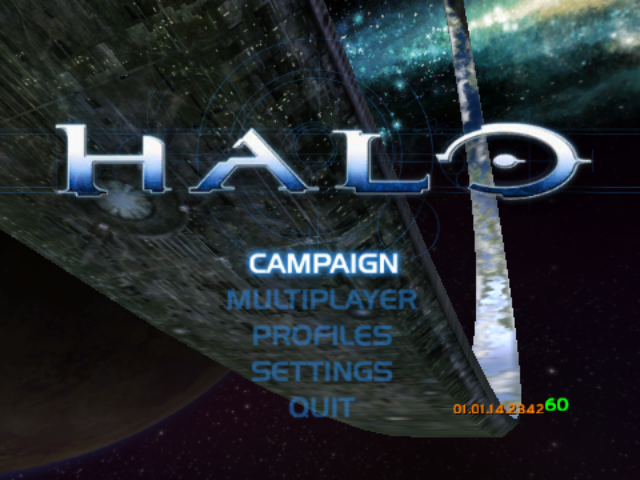
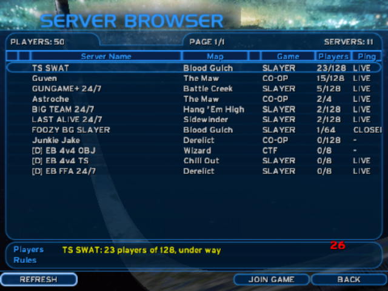
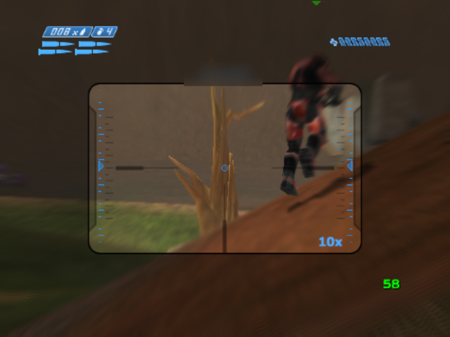

Halo: Combat Evolved on the Anbernic RG35XX H
A native ARM64 port for Knulli on the Allwinner H700 and its Mali-G31 GPU.
Yes, Halo CE runs natively on the Anbernic RG35XX H (RG35XXH) under Knulli: 60 fps in the menus and about 40 to 55 fps in campaign levels at the default render scale. The port builds the halo-ce-universal decompilation of the Xbox game as AArch64 code, with no emulation, no Box64, no Wine and no xemu. You need your own copy of the original Xbox game; the releases hold the port's own programs and no game data.
- 60 fpsMain menu
- ~57 fps343 Guilty Spark (c10)
- ~43 fpsThe Silent Cartographer battle (b30)
- ~59 fpsHalo, level opening (a30)
Screenshots




Features
- Native AArch64 code for the game and the host: the Cortex-A53 cores run the game's own logic, nothing is translated or emulated.
- Runs on stock Knulli with the firmware's own SDL2 and Arm's Mali-G31 OpenGL ES driver on the framebuffer.
- A GL thread moves the Mali driver's per-draw CPU cost, about 17 µs a draw call, onto another core.
- Renderer changes for a tile-based GPU: program binary cache, fp16 shaders, 16-bit textures, asynchronous occlusion readback, quad batching and decal ordering (about 700 decal draws become about 20), model LOD scaling, and shadows drawn without render-target switches.
- Adjustable render scale, CPU and GPU clocks pinned while playing, and the handheld's own controls.
- The first launch extracts
maps/from your Xbox disc image on the handheld. - Online play from upstream OpenCE: campaign co-op and multiplayer over the internet (a server browser of public games) or the local network, with the PC version's menus, against PCs and other handhelds.
Performance
Frames per second on an Anbernic RG35XX H, Knulli Gladiator II, stock thermal limits, with the level in the game's cache: the typical value and the range over the first minute of each level. Dynamic resolution is on, as it is by default. Last updated 2026-10-06 (release v2026.10.06).
| Scene | Render scale 0.75 (default) | Render scale 1.0 (640x480) |
|---|---|---|
| Main menu | 60 | 60 |
| c10, 343 Guilty Spark (swamp) | about 57 (46–60) | about 56 (23–60) |
| b30, The Silent Cartographer (beach battle) | about 43 (38–47) | about 38 (28–47) |
| a30, Halo (level opening) | about 59 (39–60) | about 40 (26–60) |
At 0.75 the limits are the game's own thread and the Mali driver's CPU time per draw call; where the GPU is the limit, dynamic resolution lowers the render scale, down to 0.5, until it keeps up. The measurements behind each optimisation are in PERFORMANCE.md.
Supported devices
The port needs an Allwinner H700 (4x Cortex-A53 at 1.5 GHz, Mali-G31 MP2, 1 GB RAM), with Knulli or another firmware that has PortMaster.
| Device | Screen | Status |
|---|---|---|
| Anbernic RG35XX H | 640x480 | Tested |
| Anbernic RG35XX Plus | 640x480 | Untested, expected to work |
| Anbernic RG35XX SP | 640x480 | Untested, expected to work |
| Anbernic RG35XX 2024 | 640x480 | Untested, expected to work |
| Anbernic RG40XX H | 640x480 | Untested, expected to work |
| Anbernic RG40XX V | 640x480 | Untested, expected to work |
| Anbernic RG CubeXX | 720x720 | Untested |
| Anbernic RG34XX SP | 720x480 | Works, reported by a user |
| Anbernic RG34XX | 720x480 | Untested, expected to work |
Firmware: Knulli is tested, with the Knulli zip and with the PortMaster zip. muOS is expected to work with the PortMaster zip (checked from its image) but is untested on a handheld; ROCKNIX is untested. TrimUI handhelds and devices with other SoCs are not supported.
Install
You need an H700 handheld with Knulli, your own Halo: Combat Evolved disc image for the original Xbox, about 3 GB free on the card (the maps and the game's cache), and the latest release (or a build: below).
- Download the release. Download
halo-ce-knulli-<version>.zipfrom the latest release. - Unzip it onto the SD card. Unzip it onto the SD card, into the partition that holds the
romsfolder (over the network,\\KNULLI\share). It addsroms/ports/Halo.shand the folderroms/ports/halo/. - Add your disc image. Put your own Xbox disc image of Halo: Combat Evolved (
.iso) inroms/ports/halo/. - Launch from Ports. Start Halo from the Ports list. The first launch copies the
maps/folder out of the image with its progress on the screen (about four minutes), then the game sets up its cache (about a minute, with a black screen); the image can be deleted afterwards. - Quit. To quit, hold the hotkey (MENU or SELECT) and press START.
- Or install with PortMaster. On Knulli or another firmware with PortMaster, put
halo-ce-portmaster-<version>.zipfrom the latest release in PortMaster'sautoinstallfolder and start PortMaster; then put the disc image inports/halo/and start Halo from Ports.
Settings are in halo/config.toml (for example display.render_scale, default 0.75), the log in halo/log.txt.
Build from source
The build runs on Linux x86-64 (Ubuntu 24.04, WSL works) with python3, ninja-build, git, clang 22 from apt.llvm.org (for the arm64_32 guest target), the Android NDK r28c and gcc-aarch64-linux-gnu. It links against libSDL2-2.0.so.0 and libmali.so.0 copied from the handheld's /usr/lib; those are never committed.
git clone https://github.com/kirklandsig/halo-ce-anbernic-rg35xx.git
cd halo-ce-anbernic-rg35xx
mkdir -p sysroot # copy libSDL2-2.0.so.0* and libmali.so.0* from the handheld here
ANDROID_NDK=/path/to/android-ndk-r28c SYSROOT_LIB=$PWD/sysroot ./build.sh
ls dist/ # halo halo_guest.elf Halo.sh halo_extract.py halo_screen.py sdl_mapping.pybuild.sh clones halo-ce-universal at a pinned commit, applies this project's patch, adds the Knulli host, and builds. The first build takes 10 to 30 minutes.
How it works
Halo's data holds 32-bit pointers, so the upstream Android port compiles the game as ILP32 AArch64 code (64-bit ARM instructions with 32-bit pointers) into a guest image that a small host loads. This project adds a host for Knulli: an aarch64 glibc Linux program that answers the guest's SDL3 calls with the firmware's SDL2, the only SDL with the Mali framebuffer driver, and replays the guest's OpenGL ES calls on a GL thread. Renderer changes for the tile-based Mali-G31 remove pipeline stalls and render-target switches. Details are in HOW-IT-WORKS.md.
FAQ
Can the Anbernic RG35XX H run Halo: Combat Evolved?
Yes. This port runs Halo CE natively on the RG35XX H under Knulli, as AArch64 code on the H700's Cortex-A53 cores with the Mali-G31 GPU. It is built from the halo-ce-universal decompilation; you supply the Xbox game's data.
What frame rate does Halo CE get on the RG35XX H?
At the default render scale of 0.75: 60 fps in the menus, about 40 fps on 343 Guilty Spark (c10, 31 to 44), about 40 fps in the beach battle of The Silent Cartographer (b30), and about 55 fps at the opening of Halo (a30). At the full 640x480 it is about 24 to 40 fps. The numbers are improving; see the performance table.
Does it work with the Xbox version or the PC version of Halo?
The Xbox version. The decompilation is of the Xbox build, and it reads the Xbox maps. The PC version (Gearbox's port) has different map files that this code cannot load. Use a disc image of the original Xbox game.
Is this legal?
The repository contains only source code and documentation, and its releases only the port's programs built from that source: the upstream decompilation's authors released their code under CC0, and so does this port. Neither contains game files, disc images or maps. You need your own copy of the Xbox game. Whether decompilation projects are lawful depends on where you live; this is not legal advice. See the legal notice.
Does it need PortMaster?
Not on Knulli: the Knulli zip is a plain port, a launcher script in roms/ports and a folder. Each release also has a PortMaster zip, for PortMaster on Knulli or on other firmware (Install). Both use the firmware's own SDL2 and graphics driver and none of PortMaster's runtimes.
Does it work on muOS or ROCKNIX?
With the PortMaster zip, muOS is expected to work: its system has the same Mali driver as Knulli and what else the port needs, checked from its image, but it has not been tested on a handheld yet. ROCKNIX is untested, and can use a different graphics driver (Panfrost). The host is built on glibc 2.31 and links EGL and OpenGL ES by their usual names, so that it loads on firmware older than Knulli. Reports are welcome.
Why not run the PC version with Box64 and Wine?
The PC version is a 32-bit x86 Windows program that draws with Direct3D 9. Running it on the H700 would need x86 translation, Wine, and a Direct3D to OpenGL ES translation layer, all on four Cortex-A53 cores and 1 GB of RAM. Each layer costs CPU time the device does not have. The native port runs the game's own logic as ARM64 code and draws with OpenGL ES directly.
Why not use xemu?
xemu emulates the whole original Xbox, its Pentium III CPU and its NV2A GPU, and needs a fast desktop CPU and a desktop OpenGL or Vulkan GPU. The H700's Cortex-A53 cores and its OpenGL ES-only Mali driver are far below that. A native port of the decompiled code avoids the emulation entirely.
Which other handhelds does it work on?
It should work on the other Allwinner H700 handhelds that run Knulli: the Anbernic RG35XX Plus, SP and 2024, RG40XX H and V, RG CubeXX and RG34XX. The RG35XX H is the one it is developed on, and a user reported the RG34XX SP working, its 3:2 screen filled with screen_width = 0 (#1). TrimUI handhelds and other SoCs are not supported.
Legal notice
This is an unofficial fan project, not affiliated with, endorsed by or sponsored by Microsoft, Xbox Game Studios, Halo Studios or Bungie. Halo, Halo: Combat Evolved and Xbox are trademarks of Microsoft Corporation. The project and its releases contain no Halo game files (no disc images, maps, XBE or extracted assets) and no Arm Mali driver or device libraries; the releases hold only the port's own programs, built from this source. To play, you need your own copy of the original Xbox game. See LEGAL.md.